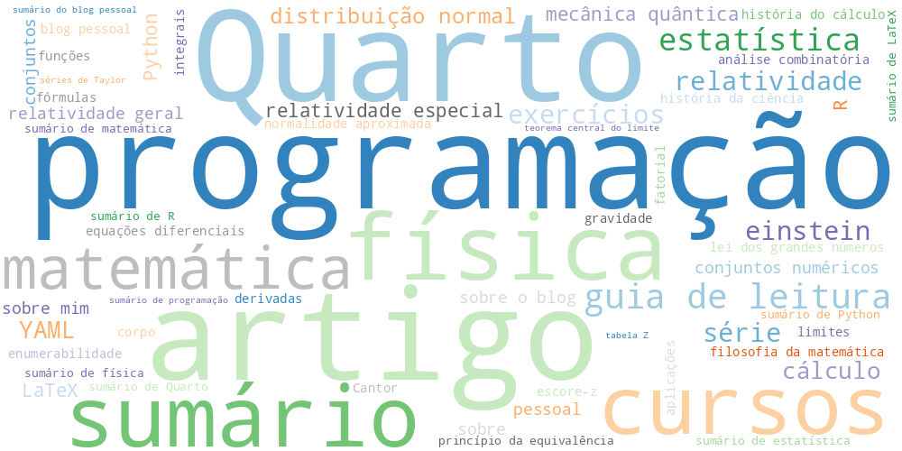

Tags

üìö Todas as Tags
R (7) análise de dados (7) física (7) programação (6) Albert Einstein (5) matemática (5) quarto (5) estatística (4) guia de leitura (4) mecânica quântica (4) Excel (3) Maxwell (3) cabeçalho yaml (3) contração do comprimento (3) espaço-tempo (3) história da física (3) html (3) python (3) quanta (3) referencial inercial (3) simultaneidade (3) tempo dilatado (3) teoria quântica (3) transformação de Lorentz (3) velocidade da luz (3) Alain Aspect (2) Erwin Schrödinger (2) Euler (2) Feynman (2) Hugh Everett III (2) John Bell (2) LaTeX (2) Lord Kelvin (2) Max Born (2) Max Planck (2) Niels Bohr (2) Pascual Jordan (2) Paul Dirac (2) Python (2) QED (2) Quarto (2) Ramanujan (2) Rayleigh-Jeans (2) Schwinger (2) Tomonaga (2) Werner Heisenberg (2) automação (2) blocos de código (2) catástrofe do ultravioleta (2) ciência de dados (2) computação quântica (2) congresso de Solvay (2) corpo negro (2) criptografia quântica (2) cursos (2) decoerência quântica (2) demonstrações (2) desigualdades de Bell (2) distribuição normal (2) documentos científicos (2) efeito fotoelétrico (2) eletrodinâmica quântica (2) emaranhamento quântico (2) ensino (2) espaços de Hilbert (2) estética matemática (2) formatação (2) função de onda (2) fórmulas matemáticas (2) gato de Schrödinger (2) gravidade quântica em loop (2) gráficos (2) interpretação de Copenhague (2) interpretação de muitos mundos (2) interpretação estatística (2) latex (2) lógica (2) markdown (2) mecânica estatística (2) mecânica matricial (2) princípio da incerteza (2) quantização da radiação (2) qubits (2) relatividade geral (2) relatórios dinâmicos (2) segunda revolução quântica (2) teleportação quântica (2) teorema EPR (2) teorema de Bell (2) teoria das cordas (2) teoria de campos quânticos (2) teoria quântica da gravidade (2) universos paralelos (2) variáveis ocultas locais (2) visualização de dados (2) Beamer (1) Einstein (1) Euclides (1) Fermat (1) Gauss (1) Hardy (1) Littlewood (1) Minkowski (1) Newton (1) RMarkdown (1) Schrödinger (1) Taniyama–Shimura (1) Taylor (1) Wiles (1) análise combinatória (1) análise estatística (1) arte e matemática (1) aula (1) autor (1) bastidores (1) beleza matemática (1) computação científica (1) configuração de post (1) cotidiano (1) curiosidades (1) curso (1) curso de estatística (1) curso de matemática (1) definição recursiva (1) demonstrações elegantes (1) divulgação científica (1) documentação técnica (1) epub (1) equações históricas (1) escrita científica (1) estrutura de documento (1) estrutura de documentos (1) estrutura de site (1) experiências (1) fatorial de zero (1) filosofia da matemática (1) formatação de texto (1) função gama (1) funções (1) ggplot2 (1) gráficos com ggplot2 (1) gráficos com python (1) index.qmd (1) integração R e Quarto (1) intervalo de confiança (1) justificativa lógica (1) matematica (1) matemática básica (1) matplotlib (1) metadados (1) modelos latex (1) notas do blog (1) números fatoriais (1) onda (1) organização de capítulos (1) pandas (1) parâmetros yaml (1) pessoal (1) princípio multiplicativo (1) projeto (1) projetos científicos (1) raciocínio matemático (1) reflexões pessoais (1) relatividade especial (1) relatórios automatizados (1) relatórios em R (1) relatórios reprodutíveis (1) renderização latex (1) scripts úteis (1) site estático (1) slides (1) sobre mim (1) sobre o blog (1) série de Taylor (1) tabulate (1) templates quarto (1) teoria da relatividade (1) testes de hipótese (1) variabilidade (1) visualização (1) yaml no quarto (1) álgebra (1)